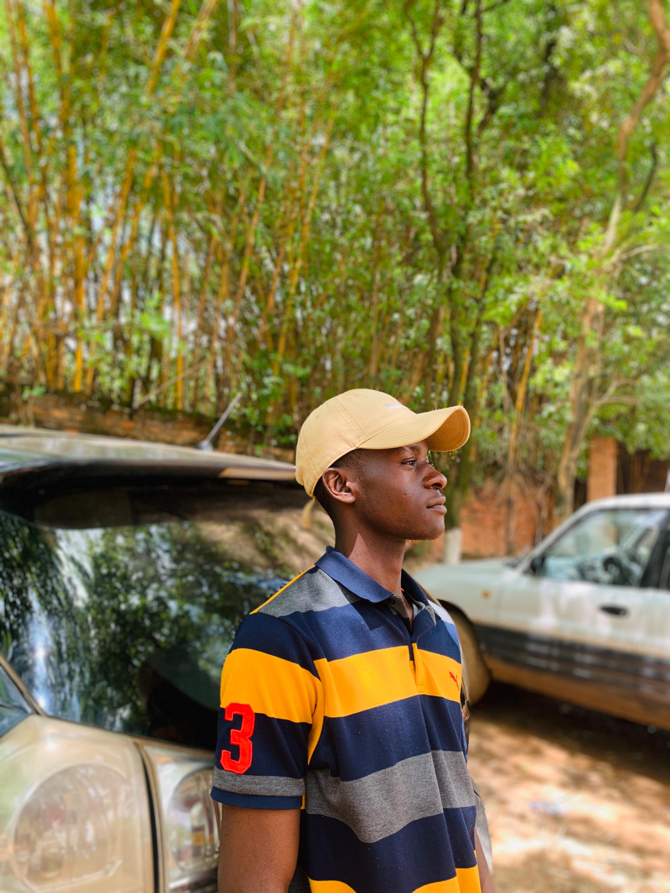

A Propos de moi
Je m'appelle Mulenda wa umba Jacques, etudiant en Licence 2 à L'université Don Bosco de Lubumbashi, passionné par le reseau informatique particulièrement à la conception, la gestion et la sécurisation des infractructures numériques.
Mon ambition est de développer des solution fiables et innovantes qui facilitent la connectivité et améliorent la performance curieux et motivé, je constamment à approfondir mes connaissances en administration réseau cybersécurité et nouvelles technologies.
Mes Compétence
| Catégorie | Compétence | Niveau |
|---|---|---|
| Programmation | HTML, CSS, JavaScript, Python | Debutent |
| Reseau | Cisco Trace | Avance |
| Office | Word, Excel, PowerPoint | Avance |